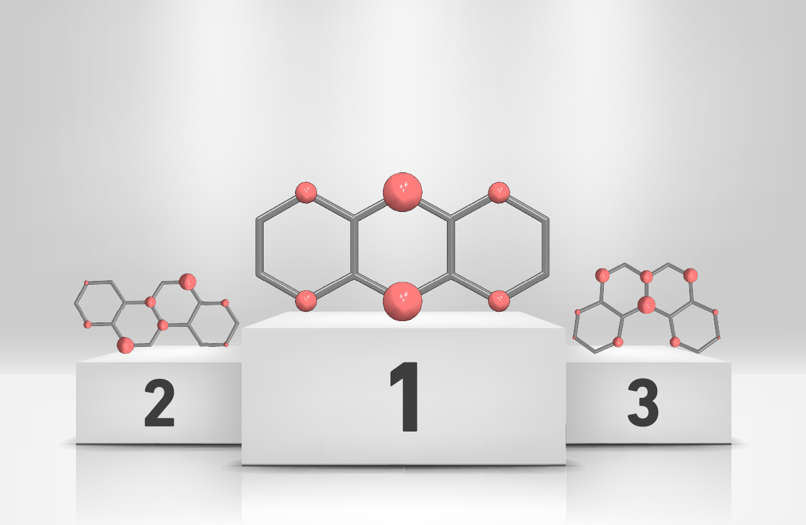
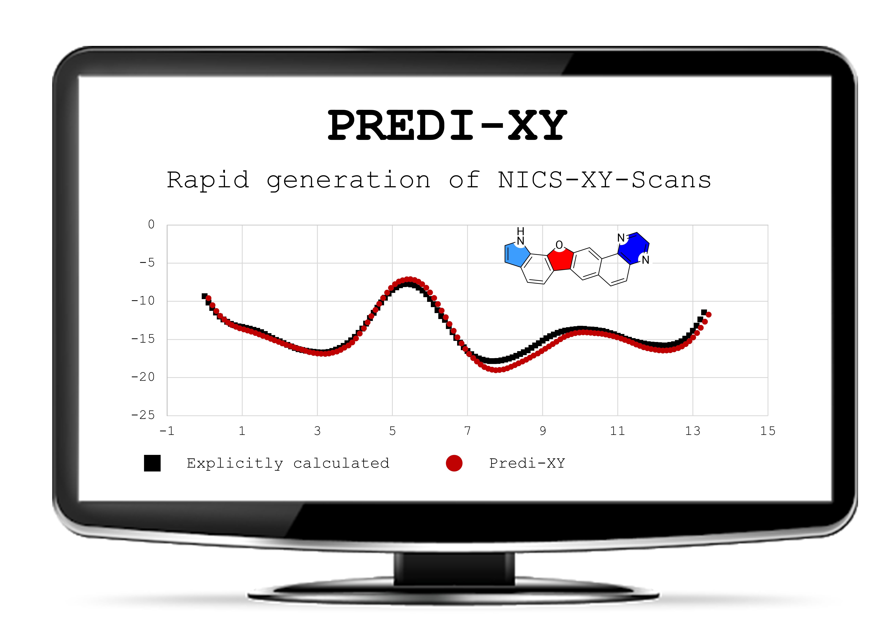

Renana Gershoni Poranne is a Branco Weiss Fellow and a Senior Scientist (Group Leader) in the group of Prof. Dr. Peter Chen
at the Laboratorium für Organische Chemie at the ETH Zürich.
Renana was appointed to her position as Senior Scientist and Lecturer in July 2017, following a two-year post-doctoral period in the same group.
She completed her PhD studies under the supervision of Prof. Amnon Stanger
in the Schulich Faculty of Chemistry at the Technion,
working on elucidation of the properties of aromatic compounds and developing methodologies for the identification and quantification of aromaticity in polycylic aromatic hydrocarbons.
Prior to that, she received her MSc Summa cum Laude for her work on functionlization of corannulene in the group of Prof. Ehud Keinan.
Renana's research interests lie in the field of computational physical organic chemistry, with particular emphasis on development of methods
and tools for better understanding of mechanisms and physical properties of organic and organo-metallic compounds. Her group's work focuses on questions related to
aromaticity, dispersion, metallophilic interactions, catalysis, and mechanism elucidation.
More information may be found here:
Full CV; Full List of Publications
About
Recent Publications
These are the five most recent publications. Please click on the title of the paper to access the version of record or email us to obtain an author's version. For all publications, please click here.

Chapter 4: NICS — Nucleus Independent Chemical Shift
PreprintAromaticity: Modern Computational Methods and Applications, May 2021
Edited by: Israel Fernandez
Published by: Elsevier

Chemistry - A European Journal, January 2021
Prediction of Spin Density, Baird‐Antiaromaticity, and Singlet‐Triplet Energy Gap in Triplet‐State Polybenzenoid Systems from Simple Structural Motifs
Chemistry - A European Journal, January 2021

Predicting bond-currents in polybenzenoid hydrocarbons with an additivity scheme
The Journal of Chemical Physics, January 2021
Invited contribution for the

Peptide–Metal Frameworks with Metal Strings Guided by Dispersion Interactions
Journal of the American Chemical Society, January 2021

Electronic Structure, December 2020
Invited contribution for theEmerging Leaders issue
Predi-XY: A Python program for automated generation of NICS-XY-Scans based on an Additivity Scheme
Electronic Structure, December 2020
Invited contribution for the